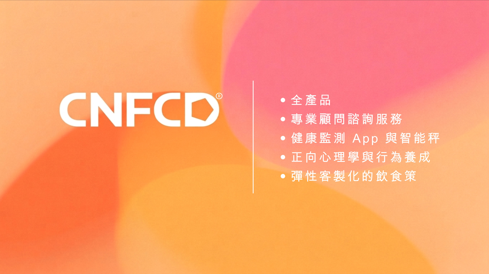

什麼是 CNFCD？
基於科學實證，打造永續的健康生活
【CNFCD 論文收錄國際期刊】
由研究主持人怡懋博士（Dr. Yi-Maun Subeq）主導的 CNFCD 系統化研究，正式被 SCI / SCIE 雙指標學術期刊《Enterprise Information Systems》（企業資訊系統）收錄並發表。
研究數據來自 18,539 位使用 CNFCD 系統超過 60 天的真實使用者，採用大規模真實世界回溯性研究方法。
論文研究指出：
平均 60 天，體重減少 11.60 公斤、體脂下降 6.79%、內臟脂肪降低 2.82個等級，肌肉蛋白質微幅增加 0.13 公斤。
這套系統涵蓋五大元素的協同運作：全面營養、正向心理、彈性飲食設計、即時數位回饋，以及專業顧問陪伴。
怡懋博士在影片中說：「真正能走得長遠的，是誠實，是把自己做得更專業。」
這篇論文，是 CNFCD 在真實世界中的科學觀察記錄。

【CNFCD：健康不是單一行為可以達成的】
Yvonne博士在專訪時說了一句關鍵的話：
「沒有一個單一的方法或產品，能把人帶回真正的健康。 」
健康不是靠「做一次」、不是靠「吃某一種東西」、更不是靠1～2週的努力。
它是一點一滴、反覆累積而成的：
每天上秤、每天做正確的選擇、每天願意持續了解自己的身體。
微康這些年的成果，不是靠任何單一工具所創造的，而是靠「人」：
- 顧問的陪伴與提醒
- 一句句正向的鼓勵
- 每次定聚帶來的快樂與動力
- 每天APP上直觀的數據回饋
- 夥伴之間互相支持的力量
這些微小的觀念改變，讓我們永生世代安康，這就是微康。
TCA 能量循環（檸檬酸循環）是什麼？
TCA 能量循環，又稱為檸檬酸循環（Citric Acid Cycle）或克氏循環（Krebs Cycle），是人體細胞內最核心的能量代謝路徑之一。在科學上，這個過程被歸類為檸檬酸循環，負責將我們從食物中獲得的營養，轉換成身體可以直接使用的能量。
簡單來說：
我們吃進去的食物 → 經過代謝 → 進入 TCA 循環 → 產生身體能量（ATP）
TCA 循環與生活狀態的關聯
從整體健康觀點來看，TCA 循環的運作效率，與以下因素有關：
- 作息規律（生理節律）
- 營養攝取是否均衡
- 壓力與身心狀態
- 身體活動量
當生活節奏較穩定時，身體能量代謝系統通常也較順暢；反之，長期壓力或作息混亂，可能讓整體代謝效率下降。
它就是把「食物能量」轉換成「身體能量」的核心引擎。